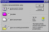
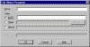
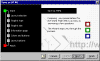
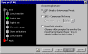
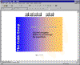

|
| ||
|
| ||
Brought to you by Inside Microsoft FrontPage, a ZD Journals publication. Click here for a free issue  .
.
When graphic designers come to Web publishing, they're often disappointed by the lack of precision and control HTML offers. Similarly, people who regularly develop presentaions using the Microsoft PowerPoint®  presentation graphics program are often disappointed at limitations in such areas as page transitions and text animations.
presentation graphics program are often disappointed at limitations in such areas as page transitions and text animations.
Fortunately, FrontPage 98 integrates well with PowerPoint (and other Microsoft Office 97 applications). With just a few steps, you can bring your PowerPoint presentations into FrontPage. In this article, we'll show you how.
Depending on your audience, you can import your presentations in two different ways. If you need to support multiple platforms -- and if your presentations are mostly text -- you can use PowerPoint's Internet Assistant to quickly convert your presentation to a series of linked HTML pages. You can then import these pages into your FrontPage-based Web site.
On the other hand, if everyone who will view your pages has the Microsoft Windows® 95 or Windows NT® operating systems, the PowerPoint Animation ActiveX™ control lets you incorporate your animation directly into a single Web page. This control currently works with PowerPoint 95 animations only, so if you have PowerPoint 97, you'll have to save down to the earlier version.
We'll take a look at both of these options shortly. First, though, we need to create a PowerPoint presentation.
Since this isn't a PowerPoint journal, we won't spend much time creating a detailed presentation. Instead, we'll use PowerPoint's AutoContent Wizard to build a quick example: a company-overview slide show.
To begin, launch PowerPoint 97. In the startup dialog box, as shown in the thumbnail sketch below, select AutoContent Wizard, then click OK. On the first page of the wizard, click Next. On the second page, choose Organization Overview and click Next.

Click image to enlargeThe next page will ask how your presentation will be used. Select Internet, Kiosk. This setting will add navigation buttons to each slide so that users can easily browse through the presentation.
Click the Finish button to end the wizard process. If you'd like, you can look at the finished product by choosing View Show from the Slide Show menu. You'll see that we've created an attractive, but meaningless, presentation of 10 slides. When you're through viewing the show, click the rectangle at the lower-left corner of the screen and choose End Show from the context menu.
Next, save the presentation as Overview. Be sure to change the file type to PowerPoint 95 and note the directory in which the file is saved. Now, we're ready to bring the presentation into FrontPage.
Let's first look at using the PowerPoint ActiveX control. To get started, launch FrontPage Explorer and create a new one-page Web. Choose Import... from the File menu. In the resulting dialog box, click Add File..., then navigate to where you saved the Overview presentation. Select that file, click Open and then OK to import the file into the current Web.
Now, switch to FrontPage Editor. Choose ActiveX Control... from the Insert menu's Advanced submenu. In the Pick A Control dropdown list, choose Microsoft PowerPoint Animation.
Click Properties... to open the Object Parameters dialog box. In that dialog, click Add... to open the dialog shown here.

Click image to enlargeType file in the Name text field, click the Page radio button, then click the Browse... button. Choose overview.ppt and click OK. Click OK three more times to return to the page. You should now see a small ActiveX logo in the upper-left corner.
Before we preview the page, we need to enlarge the ActiveX control. To do so, click on it and drag the lower-right handle until it's the size you want, perhaps filling two-thirds of the window.
Now, click the Preview tab at the bottom of the window or choose Preview In Browser... from the File menu. After a few seconds, the presentation will appear on the page. You can navigate through it by clicking the buttons, just as you did in PowerPoint.
The presentation is just one element on the page, so you can add a page banner, navigation buttons, and other elements. As Figure A shows, we've added a couple of elements and rearranged the page a bit.
Remember that the ActiveX control is the best approach to use if you know that all your users will have the Windows 95 or Windows NT operating systems -- for example, if you're developing for a corporate intranet. Keep in mind, however, that users with slow connections will face significant download times -- our sample presentation takes more than five minutes to download at 28.8 Kbps.
If you need to support multiple platforms and slow connections, you should consider converting your presentation into HTML files. We'll look at that option next.
Switch back to PowerPoint now and choose Save As HTML... from the File menu. Doing so will launch the Internet Assistant, a wizard that simplifies the conversion process. The thumbnail below shows the first page of this wizard.

Click image to enlargeAlthough we'll accept most of the default settings, let's take a quick look at some of them. On the second page, you can create a new layout or choose one you've previously saved. (At the end of the wizard process, you can save your settings as a layout for future use.) Click Next to confirm the default.
The third page lets you choose between a standard layout and a layout with frames. Click Next again to move to the page shown here.

Click image to enlargeHere, you can choose the type of graphics to use. Note that you can also choose a format that requires the PowerPoint Animation Player, a browser plug-in. Since FrontPage includes the PowerPoint ActiveX control, we don't need this option. Instead, select GIF - Graphics Interchange Format and click Next.
On the fifth page, you can specify the size you want your slides to be onscreen. For our example, choose 640 By 480 as the monitor resolution, then choose -- Width Of Screen from the Width Of Graphics dropdown list. Click Next to continue.
The sixth page lets you add data to the presentation's information page. We'll skip that page for our example, so click Next again. We'll also skip the seventh page, which lets you specify link colors -- you can always set these colors in FrontPage.
The next two pages let you specify a button style and decide where the buttons will be positioned (above, below, or beside the graphics). You can accept the defaults or change them.
Once you've done that, note the location where your files will be saved. Finally, click Finish. Before PowerPoint saves your presentation, it will ask whether you want to save your layout files. Click Don't Save.
Now, switch back to FrontPage Explorer. Be sure you're in Folders view, then choose Import... from the File menu. PowerPoint saved the files in a folder called Overview, so click Add Folder... and select that folder in the Browse For Folder dialog. Click OK twice to confirm your selection. You'll see that FrontPage has imported the folder and 34 files.
Double-click the overview folder to open it, then click on index.htm and rename it default.htm. FrontPage will ask if you want to update hyperlinks to this page. Click Yes, then double-click default.htm to open it in the editor.
Now, click the Preview tab (or select Preview In Browser... from the File menu). You'll see a text-based contents page. Click the Click Here To Start link to begin the presentation.
When you do, you'll see the page shown in the thumbnail below.

Click image to enlargeNotice that the page includes large navigation buttons. The two navigation buttons to the right (or bottom) take you to default.htm and to a text-only version of the presentation, respectively. In addition, the buttons within each image are active.
Since the pages are standard HTML (except for the PowerPoint images), you can make whatever changes you want to them -- applying themes, adding background colors, etc. You can also resize the GIFs, but you'd do better to run the Internet Assistant in PowerPoint again, since the resized GIFs probably won't look very good.
If you have PowerPoint 95, you'll need to download the Internet Assistant free of charge from the PowerPoint  Web site.
Web site.
As you can tell from the screen shots in this article, reducing a PowerPoint slide to half its original size can make the slide hard to read. Therefore, when you're designing your slides, be sure to use large fonts and an uncluttered design.
Sometimes the secret to success lies in working smarter -- not harder. If you've invested significant time in developing PowerPoint presentations, you can easily port those presentations to the Internet. In this article, we've shown you how to do so.
Copyright © 1998 ZD Journals, a division of Ziff-Davis Inc. ZD Journals and the ZD Journals logo are trademarks of Ziff-Davis Inc. All rights reserved. Reproduction in whole or in part in any form or medium without express written permission of Ziff-Davis is prohibited.
Did you find this material useful? Gripes? Compliments? Suggestions for other articles? Write us!
© 1999 Microsoft Corporation. All rights reserved. Terms of use.